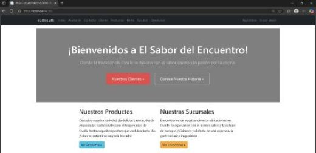

Mis Proyectos Destacados
Sushi AFK
Este proyecto nace de la iniciativa de dos amigos emprendedores que buscaban expandir su pasión por la cocina y mostrar la diversidad de la industria alimentaria extranjera. Desarrollado en equipo, "Sushi AFK" es una plataforma diseñada para facilitar la interacción de los usuarios con una oferta culinaria única, permitiéndoles explorar y disfrutar de sabores internacionales de manera sencilla y atractiva.
Sistema Inventario Node

Aplicación full-stack enfocada en Node.js, Express, SQLite y una interfaz de usuario intuitiva para la gestión eficiente de inventarios. Ideal para pequeños negocios que buscan una solución robusta y fácil de usar.